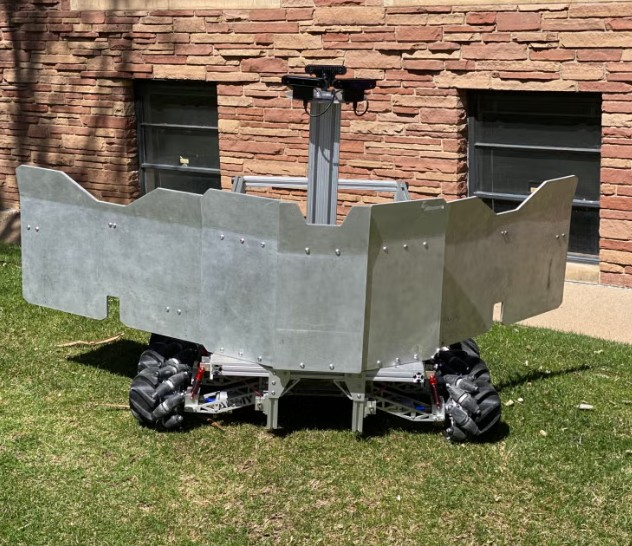

Design Project Overview
This image shows my Senior Design project sponsored by the United States Army Research Office. The scaled model of an autonomous ground-based device was developed to enhance warfighter protection. As Logistics Manager, I led integration of two legacy systems into one fully functional platform while adding new autonomous capabilities. I worked directly with the government customer to define requirements, coordinated weekly meetings, and co-authored reports and presentations demonstrating that our final design met or exceeded all performance objectives.
Image source: University of Colorado Boulder Paul M. Rady Mechanical Engineering
← Back to Home